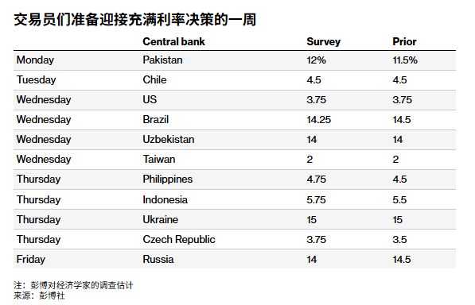
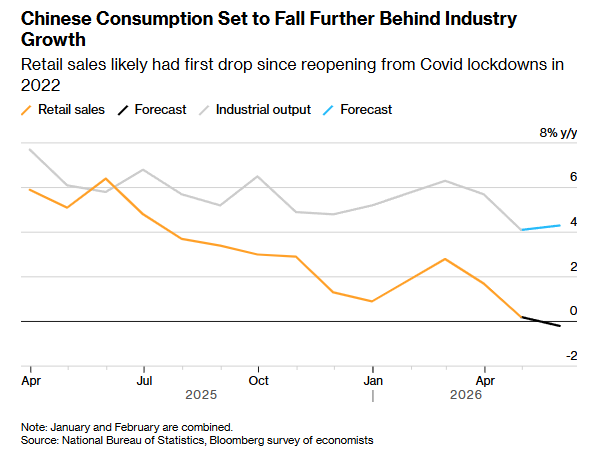
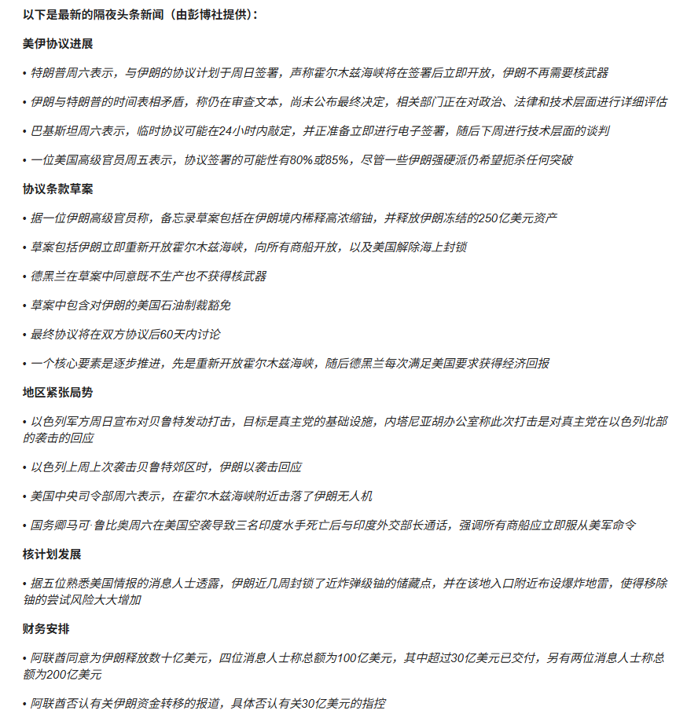
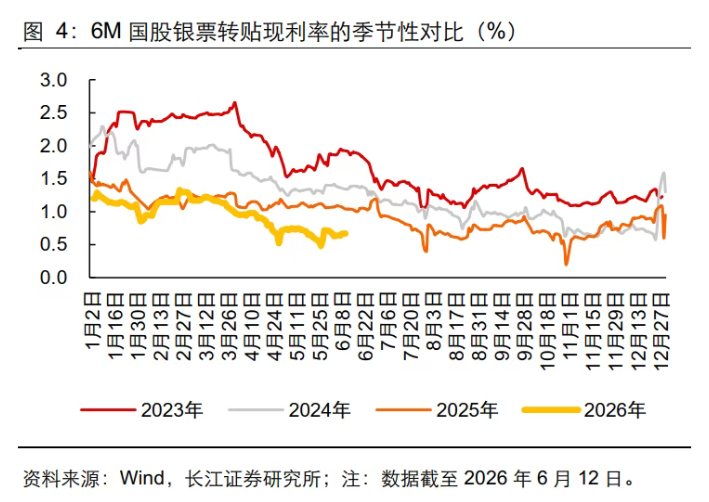
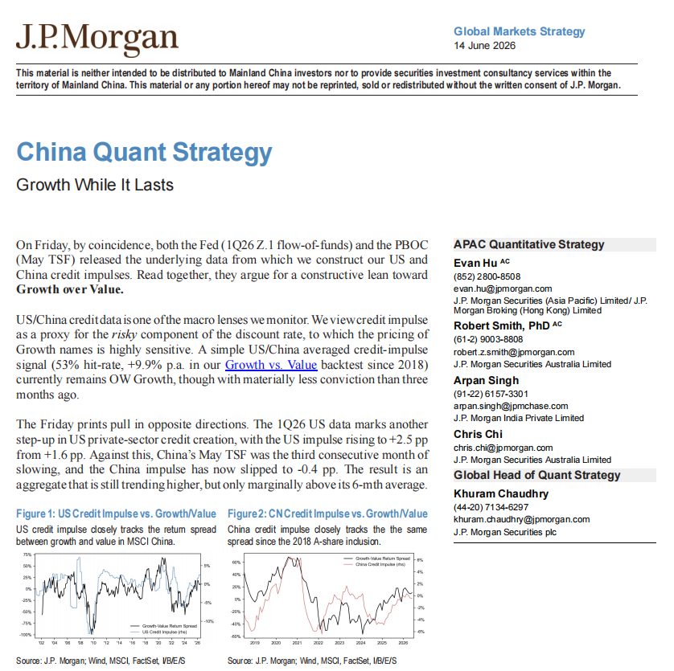

数据源：知识星球「南半球聊财经」星主 Jason 不跪当天发布内容。 当天发帖数量：4 帖。主题集中在「全球央行利率周 + 中国消费走弱 + 中美信用脉冲 + 中国票据利率 + 美伊和平协议」。
今日要点速览
今天 Jason 一口气把"宏观日历 + 资产配置含义"串了起来：（1）本周是全球央行决议周，美联储周三大概率按兵不动在 3.75%，同时彭博预警中国消费（社零）可能出现 2022 年放开以来首次负增长；（2）从央行资金流量与社融数据测算的中美"信用脉冲"仍小幅支持成长股跑赢价值股，但因中国信用连续三个月走弱，这个看多成长的信心已明显下降；（3）中国6 月票据利率仍在历史低位，印证实体融资需求疲弱、银行靠票据"冲信贷量"；（4）地缘上，特朗普称美伊协议达成，并将"免费开放"霍尔木兹海峡，签约仪式据称定在 6 月 19 日。
把这四条放在一起，Jason 想表达的底层判断大致是：美国这边流动性/信用还在扩张（利好风险资产、利好成长股），中国这边内需和信用还在收缩（消费转负、票据利率趴地板），而中东风险溢价正在快速回落（油价下行压力）。
帖子一 · 14:45 · 全球央行利率周 & 中国消费或进一步下滑
标签： #金融#
帖子原文
bloomberg：本周各经济体利率算命，以及中国消费数据可能进一步下滑


一句话核心
本周是"超级央行周"，十几个经济体集中开利率会；同时彭博预测中国社会消费品零售（社零）同比可能首次转负，内需进一步走弱。
背景与关键数据
"利率算命"指的是市场对各国央行议息会议结果的预期。第一张表是彭博整理的本周各央行决议日程，Survey 是经济学家预测的政策利率，Prior 是上次会议的利率，两者对比就能看出市场预期是加息、降息还是按兵不动：
| 日期 | 央行 | 预测利率(Survey) | 上次(Prior) | 含义 |
|---|---|---|---|---|
| 周一 | 巴基斯坦 | 12% | 11.5% | 预期加息 |
| 周二 | 智利 | 4.5 | 4.5 | 按兵不动 |
| 周三 | 美国 | 3.75 | 3.75 | 按兵不动（本周焦点） |
| 周三 | 巴西 | 14.25 | 14.5 | 预期降息 |
| 周三 | 乌兹别克斯坦 | 14 | 14 | 不动 |
| 周三 | 中国台湾 | 2 | 2 | 不动 |
| 周四 | 菲律宾 | 4.75 | 4.5 | 预期加息 |
| 周四 | 印尼 | 5.75 | 5.5 | 预期加息 |
| 周四 | 乌克兰 | 15 | 15 | 不动 |
| 周四 | 捷克 | 3.75 | 3.5 | 预期加息 |
| 周五 | 俄罗斯 | 14 | 14.5 | 预期降息 |
最受关注的是周三的美联储（FOMC）：市场预期维持在 3.75% 不动。一句话翻译"政策利率"——这是央行直接控制的、银行间互相借隔夜钱的基准成本，它会层层传导到房贷、企业贷款、债券收益率，是全球资产定价的"锚"。
第二张图（彭博）标题是「中国消费将进一步落后于工业增长」，画的是中国两个同比增速：橙线是社会消费品零售总额（零售/消费），灰线是工业增加值（工业产出），虚线是预测。可以看到橙线从 2025 年初的 ~5% 一路下滑，到 2026 年中预测要跌破 0、落到负值——这意味着如果兑现，将是 2022 年疫情封控放开以来消费同比首次负增长。相比之下工业产出还维持在 ~3.5% 左右。
图片解读
- 图1（央行决议表）：横向对比 Survey vs Prior，一眼看出本周全球货币政策是"加息阵营（巴基斯坦、菲律宾、印尼、捷克）+ 降息阵营（巴西、俄罗斯）+ 按兵不动（美国、台湾等）"并存。这说明全球没有统一的宽松/紧缩方向，各国按自己的通胀和增长节奏走。
- 图2（中国消费 vs 工业）：纵轴是同比增速(% y/y)，橙线（消费）持续下行并即将转负，灰线（工业）相对平稳。两条线张口扩大，传达的信号是——中国经济"生产端还行、需求端塌陷"，典型的内需不足。
为什么重要 / 对市场和经济的含义
美联储按兵不动 + 不再加息，本身对风险资产是中性偏友好的（钱不变贵）。但真正的看点是中国内需：消费同比转负会强化"中国通缩压力 / 需要更多刺激"的叙事，利空与中国内需挂钩的资产（A 股消费股、大宗商品里的工业金属、人民币），同时增加市场对中国央行进一步降准降息、财政加码的预期。Jason 把美联储与中国消费放一起，是在提示"外松内紧"的格局：海外流动性环境稳定，但中国基本面还在探底。
延伸知识
什么是"政策利率"传导？ 想象央行是水库总闸。它调的隔夜利率（如美国 3.75%）是闸门高度，水（资金）顺着银行间市场→债市→贷款→消费投资层层往下流。闸门抬高（加息），全社会借钱变贵、需求降温、通胀回落；闸门放低（降息）则相反。一个国家"加息还是降息"本质是在通胀和增长之间做取舍——通胀高就加息压需求，增长弱就降息托底。本周这张表里，巴基斯坦/印尼还在加息（通胀压力大），巴西/俄罗斯开始降息（通胀缓和、想保增长），就是这种取舍的真实写照。
帖子二 · 14:36 · 美伊达成协议，特朗普称"免费开放"霍尔木兹海峡
标签： #金融#
帖子原文
zerohedge：特朗普表示，与伊朗的协议现已完成，并补充说他正在授权"免费开放"霍尔木兹海峡。



一句话核心
财经媒体 zerohedge 援引消息称，美国与伊朗达成和平协议、地区军事行动停止，特朗普还表态要确保霍尔木兹海峡自由通航——这是直接利空油价、利好风险情绪的重大地缘消息。
背景与关键数据
霍尔木兹海峡是波斯湾通往外海的唯一出口，全球约 1/5 的石油和大量 LNG（液化天然气）都要从这条窄水道运出。每当中东冲突升级、市场担心伊朗"封锁海峡"，油价就会因"风险溢价"飙升；反之，冲突缓和、航道确保通畅，油价里的这部分溢价就会快速回吐。
第四张图是巴基斯坦总理 Shehbaz Sharif 的推文（被 zerohedge 转发）：宣布美国与伊朗的和平协议已达成，双方在包括黎巴嫩在内的所有战线立即并永久停止军事行动，正式签约仪式定于 6 月 19 日（周五）在瑞士举行，并感谢卡塔尔、沙特、土耳其的斡旋。前三张是 zerohedge 关于此事的报道截图与一张"美伊能否在 2026 年 6 月 30 日前达成永久和平协议"的预测市场走势图（概率在消息出来后跳升）。
图片解读
- 图1：zerohedge 报道页，顶部嵌了一张预测市场（类似 Polymarket）的概率走势图——"美伊永久和平协议"的成交概率在近期快速拉升，反映市场在为"和平"定价。
- 图2、图3：相关报道/要点的中文翻译截图（关于以色列-伊朗-美国局势与协议条款梳理），因分辨率原因细节字较小，核心信息与正文一致：冲突降温、走向签约。
- 图4：一手信源推文，给出三个硬信息——①协议已达成；②所有战线永久停火；③6 月 19 日瑞士签约。这是把"传闻"坐实成"有时间表"的关键。
为什么重要 / 对市场和经济的含义
地缘风险缓和对市场是典型的"risk-on（偏好风险）"信号：
- 原油：霍尔木兹通航确保 + 停火，油价里的战争溢价回落，利空油价（利好航空、运输、下游制造等用油行业，利空石油生产商）。
- 避险资产：黄金、美债等避险需求下降。
- 风险资产：股市、尤其与全球增长挂钩的板块情绪改善。 Jason 选这条，是在提示宏观图景里"中东这个尾部风险正在被移除"——它和帖子一、帖子四合起来，共同指向"风险溢价下降、利好成长/风险资产"的方向。需要注意：此类政治消息兑现度存在不确定性，签约前仍可能反复，Jason 转述的是媒体口径，不等于已落地的事实。
延伸知识
什么是"风险溢价"？ 把任何资产价格拆开看，都包含"无风险回报 + 风险补偿"。油价里就含一块"地缘风险溢价"——因为随时可能因战争断供，买家愿意多付一点钱锁定供应。冲突升级时这块溢价鼓起来（油价涨），冲突缓和时瘪下去（油价跌）。同理，战乱国家的股票、债券要给投资者更高的预期回报才有人买，这就是风险溢价的普遍逻辑。理解这个概念，就能明白为什么"和平消息"本身能在不改变任何实际产量的情况下，先一步把油价打下来。
帖子三 · 14:31 · 6 月票据利率仍在历史低位 → 实体融资需求弱
标签： #金融#
帖子原文
长江：6月份票据利率依然处于历史低位，说明银行依然依赖票据来"填信贷额度"，实体融资需求不强。逻辑：当实体经济融资需求强、银行贷款投放顺畅时，银行不需要大量买票据来凑信贷规模，票据需求相对没那么强，票据利率通常不会太低。但当企业真实贷款需求弱、银行又有信贷投放任务时，银行可能会通过票据融资来"冲量"。银行买票据需求增加，票据价格上升，对应的票据收益率/转贴现利率就下降。

一句话核心
长江证券用"6 个月国股银票转贴现利率"这个高频指标，指出 2026 年 6 月该利率仍趴在历史低位，说明银行在用买票据来"凑信贷规模"、实体真实贷款需求疲软。
背景与关键数据
这里有几个术语，用大白话拆开：
- 票据：企业之间做生意开的"欠条"（商业汇票），到期能兑现金。
- 转贴现利率：银行之间买卖这种"欠条"时的折价率，可以理解成"银行买票据能拿到的收益率"。
- 国股银票：国有大行 + 股份制银行承兑的票据，信用最好、最有代表性。
关键逻辑（Jason 也在正文讲了）：银行每个月有"放多少贷款"的任务（信贷额度/规模考核）。
- 如果企业真实贷款需求旺，银行轻松就把额度放满，不需要靠买票据凑数 → 票据需求一般、票据利率不会很低。
- 如果企业真实贷款需求弱，银行又必须完成放贷任务 → 只能大量买票据来"冲量"凑规模 → 买票据的人多、票据价格被买高、对应收益率（转贴现利率）被压低。
所以：票据利率越低 = 银行越在靠票据充数 = 实体融资需求越弱。 这是一个观察实体经济冷热的"温度计"，而且是日频、领先于官方社融数据的高频信号。
图片解读
图表标题「6M 国股银票转贴现利率的季节性对比（%）」：横轴是一年中的日期（1 月到 12 月），把不同年份叠在一起对比同一时点。四条线分别是 2023、2024、2025、2026 年。纵轴是利率（约 0%–3.5%）。可以看到：2026 年那条线（黄色）整体趴在最底部，6 月读数在 1% 甚至更低，明显低于 2023、2024 年同期。数据截至 2026 年 6 月 12 日，来源 Wind、长江证券研究所。趋势信号很清楚——票据利率创季节性新低，印证内需融资疲软。
为什么重要 / 对市场和经济的含义
这条与帖子一的"中国消费转负"是同一个故事的两面：中国内需和信用都在走弱。 票据利率低位意味着：
- 企业不愿意/不敢加杠杆扩张，银行"有钱放不出去"。
- 强化市场对央行**进一步宽松（降准、降息、结构性工具）**和财政加力的预期。
- 利空与信贷扩张高度相关的资产（顺周期、银行净息差、地产链）。 Jason 反复盯这个指标，是因为它比官方数据更早、更难"美化"，是判断中国信用周期拐点的实用工具。
延伸知识
为什么"价格涨→收益率跌"？ 这是固定收益（债券/票据）最核心、也最反直觉的关系。票据到期能拿回的钱是固定的（比如一年后兑付 100 元）。如果你今天花 95 元买，赚 5 元，收益率约 5.3%；如果大家抢着买、价格被抬到 99 元，你只赚 1 元，收益率就只剩 ~1%。买的人越多→价格越高→到期赚的越少→收益率越低。 票据、债券、国债全都遵循这个"价格与收益率反向"的铁律。理解了它，就能看懂为什么"银行抢票据"会把票据利率压到地板。
帖子四 · 14:07 · JPM 用中美信用脉冲做"成长 vs 价值"轮动信号
标签： #金融#
帖子原文
JPM：美联储发布了美国 2026年一季度 Z.1 资金流量数据，同一天中国央行发布了5月社融数据。我们用这两组数据来构建美国和中国的信用脉冲 credit impulse。综合来看，这些数据仍支持：成长股 Growth 相对价值股 Value 更有优势。我们把信用脉冲看作"风险折现率"的代理变量，而成长股的定价对这个风险折现率非常敏感。简单说：信用扩张改善 → 风险偏好改善/折现压力下降 → 成长股更容易跑赢。我们用美国和中国信用脉冲平均值做了一个成长/价值轮动信号。自2018年以来，这个信号在成长股相对价值股的回测中，命中率为 53%，年化收益约 +9.9%。当前这个信号仍然是：超配成长股，但相比三个月前，信心已经明显降低。
2026年一季度，美国私人部门信用创造进一步上升。美国信用脉冲从 +1.6个百分点 升至 +2.5个百分点。这对成长风格是正面信号。相反，中国5月社融是连续第三个月放缓。中国信用脉冲已经降至 -0.4个百分点。这对成长风格的支撑变弱。两者合起来之后，综合信用脉冲仍在上行，但只比6个月均值高一点点。

一句话核心
摩根大通（JPM）用中美"信用脉冲"合成了一个"买成长还是买价值"的择时信号，结论是继续超配成长股，但信心比三个月前明显减弱——因为美国信用还在扩张、中国信用却在收缩。
背景与关键数据
信用脉冲（Credit Impulse）是这帖的灵魂。它不是看"信贷总量有多大"，而是看"新增信贷的增量的变化"——即信贷扩张的加速度。打个比方：经济是一辆车，信贷总量是速度，信用脉冲是"踩油门的力度变化"。即使车还在跑（信贷为正），只要油门松了（脉冲下降），动能就在减弱。
JPM 的数据：
- 美国：用一季度 Z.1 资金流量表测算，信用脉冲从 +1.6 个百分点升到 +2.5 个百分点（加速 → 利好成长）。
- 中国：用 5 月社融测算，社融连续第三个月放缓，信用脉冲已降到 -0.4 个百分点（减速 → 利空成长支撑）。
- 合成信号（中美平均）：仍在上行，但只比 6 个月均值高一点点 → 继续超配成长，但信心下降。
- 回测：2018 年以来，该信号在"成长 vs 价值"上的命中率 53%、年化约 +9.9%。
两个名词补充：
- Z.1 资金流量表：美联储季度发布的全美各部门（家庭、企业、政府）资产负债与资金流动的"国家级总账"，是看美国信用扩张最权威的数据。
- 成长股 vs 价值股：成长股（如科技龙头）盈利在远期、对利率/折现率敏感；价值股（如银行、能源、公用事业）现金流在当下、估值便宜。两者会随宏观环境轮动。
图片解读
这张是 J.P.Morgan 研究报告封面《China Quant Strategy — Growth While It Lasts（成长行情，且行且珍惜）》，日期 2026 年 6 月 14 日，内含两张小图（左：美国信用脉冲走势；右：中美合成信号 vs 成长/价值相对表现的回测对照）。报告标题本身就是观点——"成长还能跑，但要珍惜（because 中国端在拖后腿）"。因封面图内嵌图表字号小，关键数字以正文转述为准（美国 +2.5pp、中国 -0.4pp）。
为什么重要 / 对市场和经济的含义
这帖把前三帖的宏观信号"翻译成可操作的配置结论"：
- 美国信用加速 → 利好成长股（科技、AI、高估值高弹性板块）。
- 中国信用减速 → 拖累全球成长动能、利空中国相关资产。
- 合成信号"还看多成长但信心减弱"，提示投资者别盲目追高成长，要警惕中国端继续走弱把全局拉下水。 这正是 Jason 今天叙事的收口："外松内紧"格局下，成长股仍是相对占优的方向，但中国信用收缩是头顶悬着的风险。
延伸知识
为什么"信用脉冲"比"信贷总量"更重要？ 关键在于资产价格反映的是预期变化（边际），而非水平。市场早已把"现有信贷规模"price in 了，真正驱动股价波动的是"比预期更好/更差"的增量变化。信用脉冲恰好捕捉这个"加速度"：当新增信贷开始加速，意味着企业和居民正在加杠杆、需求正在升温，往往领先实体经济和股市 6–12 个月见底回升；反之亦然。这也是为什么中国信用脉冲转负（-0.4pp）值得警惕——它可能在提前预告未来一两个季度中国需求的进一步走弱。把"看水平"升级为"看变化的变化"，是宏观投资里一个很有用的思维跃迁。
今日全图索引
| 帖号 | 时间(美西) | 主题 | 标签 | 图片文件 |
|---|---|---|---|---|
| 1 | 14:45 | 全球央行利率周 + 中国消费或转负 | #金融# | post1_img1.png（央行决议表）、post1_img2.png（中国消费vs工业） |
| 2 | 14:36 | 美伊达成和平协议 / 霍尔木兹海峡 | #金融# | post2_img1~3.png（zerohedge报道）、post2_img4.png（签约推文） |
| 3 | 14:31 | 6M 票据利率历史低位 → 内需弱 | #金融# | post3_img1.png（票据利率季节性对比） |
| 4 | 14:07 | JPM 中美信用脉冲 → 成长vs价值 | #金融# | post4_img1.png（JPM报告封面） |
注：页面时间戳为浏览器本地（美西 PDT）时区，对应北京时间需 +15 小时。本报告仅为对 Jason 帖子的转述与科普解读，不构成任何投资建议；其中转述的地缘政治协议等消息以原媒体口径为准，存在后续变化的可能。